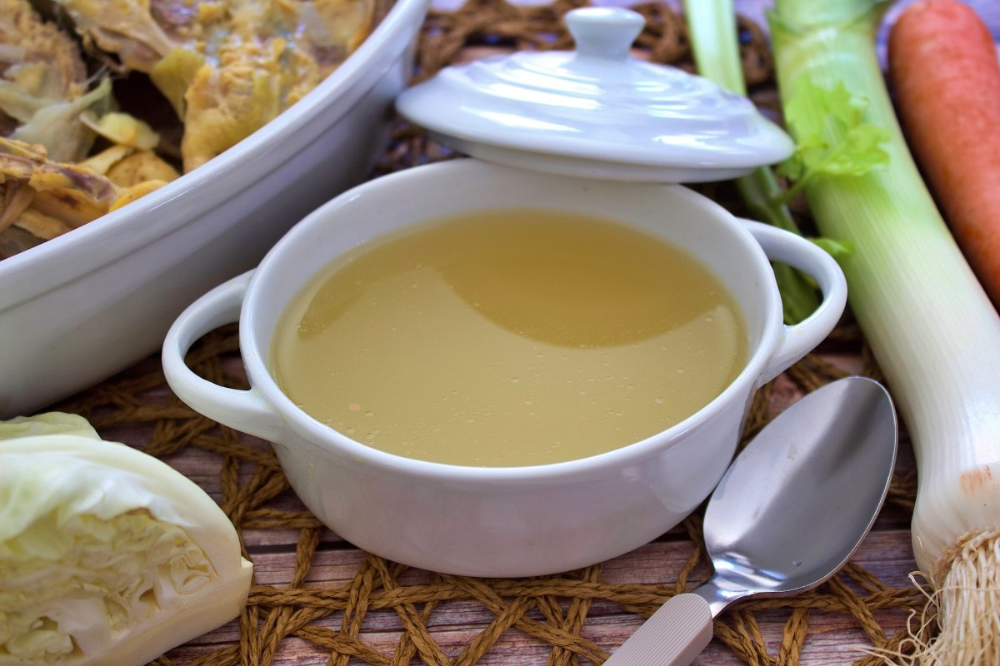

Caldo de pollo
Es mi comida favorita
- Guillermo Diáñez Gómez 2006

Ingredientes
- 1 pollo entero o 2 pechugas y 2 carcasas de pollo
- 2 litros de agua aproximadamente
- 2 zanahorias peladas y cortadas en trozos
- 1 cebolla pelada y cortada en cuartos
- 2 puerros limpios y cortados en trozo
- 2 ramas de apio lavadas y cortadas en trozos
- 2 dientes de ajo pelados y enteros
- 1 hoja de laurel
- Sal y pimienta al gusto
- Perejil fresco picado para servir (opcional)
Preparación
- Limpia bien el pollo y quítale la piel y la grasa si quieres que el caldo quede más ligero. Puedes usar un pollo entero o solo las pechugas y las carcasas, según tu preferencia.
- Pon el pollo, las verduras, el ajo, el laurel, la sal y la pimienta en una olla grande y cúbrelo con el agua. El agua debe sobrepasar unos centímetros al pollo y las verduras.
- Lleva la olla a ebullición a fuego alto y luego baja el fuego a medio-bajo. Deja que el caldo hierva lentamente durante una hora y media o dos horas, hasta que el pollo esté tierno y el caldo tenga un sabor intenso.
- Durante la cocción, ve quitando con una espumadera la espuma e impurezas que se formen en la superficie del caldo. Esto hará que el caldo quede más claro y limpio.
- Cuando el caldo esté listo, apaga el fuego y deja que repose unos minutos. Luego, cuela el caldo con un colador fino o un paño de cocina y desecha los sólidos. Puedes reservar la carne del pollo para otra preparación o desmenuzarla y añadirla al caldo si quieres.
- Prueba el caldo y ajusta la sal y la pimienta si es necesario. Sirve el caldo caliente con un poco de perejil fresco picado por encima si te gusta. También puedes agregarle fideos, arroz, verduras cocidas o lo que prefieras para hacer una sopa más completa.
Información nutricional
Calorías: 86 kcal
Grasas: 2,9 g (de las cuales 0,8 g son saturadas)
Carbohidratos: 8,5 g (de los cuales 3,8 g son azúcares)
Proteínas: 6,0 g
Fibra: 0,0 g
Colesterol: 7,2 mg
Sodio: 0,3 g
Agua: 221,2 g